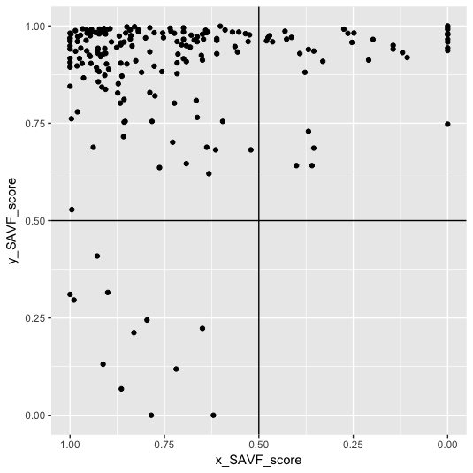

KraljicMatrix: An R package for implementing the Kraljic Matrix to strategically analyze a firm’s purchasing portfolio
Repository link »
PDF link »
View review issue »

Boehmke et al., (2017), Journal of Open Source Software, 2(10), 170, doi:10.21105/joss.00170
Summary
KraljicMatrix is an R package (R Core Team (2016)) that implements a quantified approach to the Kraljic Matrix (Kraljic (1983)) introduced by Montgomery et al. (Montgomery, Ogden, and Boehmke (2017)). It allows a firm to strategically analyze its purchasing portfolio with single- and multi-attribute value analysis to measure purchasing characteristics. In addition KraljicMatrix also provides useful functions to identify the preferred single utility slope based on subject matter expert inputs, assign and place purchases within the Kraljic Matrix, and perform sensitivity analysis.
The following is an example visualization made using KraljicMatrix's analysis tools.
-
References
Kraljic, Peter. 1983. “Purchasing Must Become Supply Management.” Harvard Business Review 61 (5): 109–17. https://hbr.org/1983/09/purchasing-must-become-supply-management.
Montgomery, Robert T., Jeffrey A. Ogden, and Bradley C. Boehmke. 2017. “A Quantified Kraljic Portfolio Matrix: Using Decision Analysis for Strategic Purchasing.” Journal of Purchasing and Supply Management forthcoming.
R Core Team. 2016. R: A Language and Environment for Statistical Computing. Vienna, Austria: R Foundation for Statistical Computing. https://www.R-project.org/.